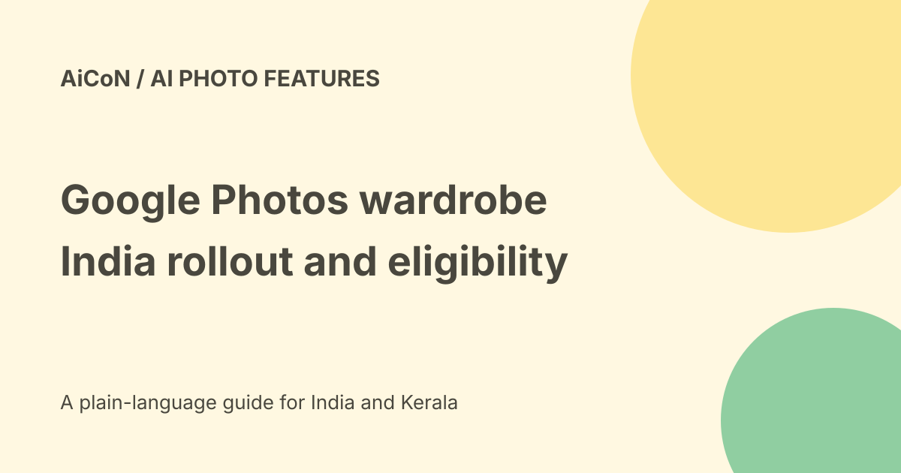

Google Photos wardrobe in India: eligibility and checks
Google's 24 September 2026 Photos update says wardrobe is available to all eligible Android and iOS users in the US, India and Brazil. The word eligible matters. This confirms a broader rollout than April's announcement, not that every phone and account has the feature.

What wardrobe does
Google says the feature uses AI to catalogue clothes that appear in your photo library. It creates a dedicated wardrobe collection from pieces you are wearing in those photos.
That is not a live inventory of your entire physical closet. Clothes never shown in usable photos may be missing, while old clothes you no longer own can still appear.
Browse and mix outfits
The original announcement describes filtering by category, mixing items into outfits and saving digital moodboards for occasions such as work or travel.
Check the identified clothing before relying on it. Similar colours, accessories, overlapping garments and lighting can lead to wrong matches.
Virtual try-on is a preview
Google describes selecting pieces and using Try it on to preview an outfit. That is an AI visualisation, not a physical fit, size or comfort guarantee.
Check the actual clothes before buying or wearing them. A generated image can change details, proportions and fabric appearance.
Rollout timeline and India
The April page said Android first, then iOS. The June Android Drop announced rollout to eligible users in the US, India and Brazil with Android 10 or newer.
The September update now explicitly names eligible Android and iOS users in those countries. We did not inspect a personal Photos account, and did not establish the full current iOS or account eligibility matrix.
A safe first check
- Update the official Google Photos app.
- Check whether your account offers a wardrobe collection.
- Read any eligibility or feature explanation shown there.
- Start with clothes already visible in your own photos.
- Review detected items rather than assuming perfect extraction.
- Try one outfit and compare it with the real garments.
- Inspect any image before saving or sharing it.
If the feature is missing, do not download a lookalike wardrobe app merely to match this guide. Availability can differ across supported accounts and devices.
Free and paid boundaries
The September post's wardrobe footnote says eligible users; it does not attach the adjacent Gemini Spark Pro/Ultra condition to wardrobe. Those are different features in the same article.
No separate wardrobe price, paid subscription requirement or account allowance was verified. Existing Photos storage and account terms still apply. No subscription, extra storage or clothing purchase was made here.
Privacy claims need the exact policy
The archive said wardrobe data is not shared with retailers. We did not establish that blanket claim in the official announcement and rollout pages checked here.
Do not translate missing policy details into a no-sharing or no-training guarantee. Read the current in-app notice and Google account controls before including sensitive photos.
Photos can reveal other people, homes, uniforms and location. Get the appropriate permission before uploading or sharing someone else's images. No private library was accessed for this guide.
Kerala use and limitations
A wardrobe of saris, layered outfits or accessories may need careful review, as with any other clothing. We did not test Kerala clothing, Malayalam interfaces or local account access.
Use the feature as a planning aid, not proof of a clothing item's identity or availability in your real closet.
What changed since the original post?
We add the September rollout evidence and replace everyone with all eligible users. We separate virtual try-on from fit guarantees and remove an unsupported retailer-data blanket assurance.
Frequently asked questions
Is India included?
Yes, for eligible Android and iOS users in the checked September update.
Does it see every item I own?
No. The announced workflow uses clothes visible in photos.
Was a personal account tested?
No.
Sources: Official wardrobe announcement · June Android rollout details · Current September Photos update. Checked 7 October 2026.